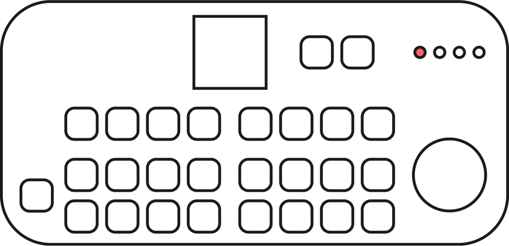

Home
The VM-1 is a Raspberry Pi 5 based video mixer that ...
- is easy to use.
- you can build yourself.
- is open source.
- is for everyone.

Features
- Video / HDMI mixing
- 2 HDMI outputs
- 1 HDMI input
- Low latency playback
- All video signals handled in 1080p (Full-HD)
- Switching between videos works currently via keyboard.
- Fade-to-black is implemented. Crossfades are soon to come.
Planned
- Video effects (like Chroma Key)
- Programmable shaders
- Camera streams from smartphones
- Second HDMI-Input
- Recording video loops
- Syncing the videos of multiple Raspberry Pis in a network
- Control via OSC and MIDI
- Video editing features (set in- and out-Point)
- Homographic Projection Mapping
- An app to control the VM-1